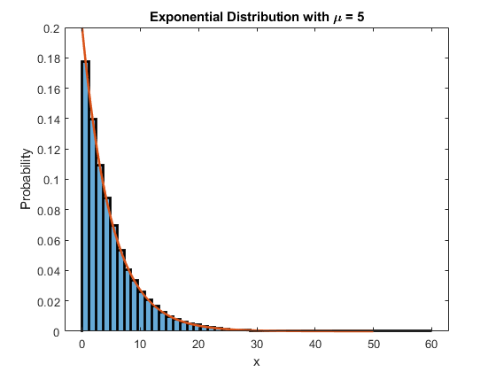
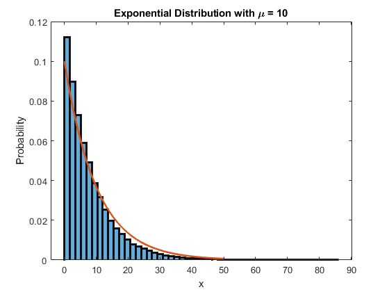
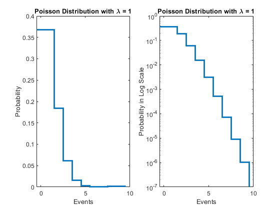
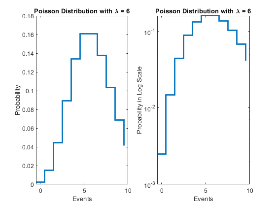

Lab 1
Contents
A Little Statistics
Section 1B
Integrates a standard normal distribution using normcdf(x). These values are approximately equal to the expected values listed on the z-table on Wikipedia.
disp(normcdf(0)) disp(normcdf(0.1)) disp(normcdf(0.3)) disp(normcdf(0.5)) disp(normcdf(1)) disp(normcdf(-1))
0.5000
0.5398
0.6179
0.6915
0.8413
0.1587
Section 1C
Finds the associated sigma of the inverse of the standard normal distribution using norminv(p). These values are approximately equal to the expected value. .
disp(norminv(0.84134)) disp(norminv(0.97725)) disp(norminv(0.99865)) disp(norminv(0.99997)) disp(norminv(0.00003))
1.0000
2.0000
3.0000
4.0128
-4.0128
Section 1D
The negative sign from norminv(p) refers to the left side of the mean. The mean of normalized distribution is at p = 0.5. This would give us a z value of 0.
Section 2B
Plot of expontential distribution with 100k samples and mu at 5.
d = random('Exponential',5,[1,100000]); histogram(d,50,'LineWidth',2); histogram(d,50,'LineWidth',2,"Normalization","pdf"); hold on; x = linspace(0,50,100000); expD = makedist("Exponential","mu",5); plot(x,pdf(expD,x),"LineWidth",2); title("Exponential Distribution with \mu = 5"); xlabel("x"); ylabel("Probability"); figure; % Plot of exponential distribution with 100k samples and mu at 10. d2 = random('Exponential',8,[1,100000]); histogram(d2,50,'LineWidth',2); histogram(d2,50,'LineWidth',2,"Normalization","pdf"); hold on; x2 = linspace(0,50,100000); expD2 = makedist("Exponential","mu",10); plot(x2,pdf(expD2,x2),"LineWidth",2); title("Exponential Distribution with \mu = 10"); xlabel("x"); ylabel("Probability"); figure; % Here, I have shown an exponential distribution using histograms. % Comparing the two graphs, we see how an increase in mu results in % a wider exponentential distribution. Specifically, the number of % instances at 0 decreases but there's an increase in the number of % instance past 20. This would mean it gets less steep too. 
Section 3A
I selected a value of 3.2 as my hypothetical measurement.
% Section 3B % The statistical question I want to ask is "What is the probability % of the background producing a signal of 5.4 or larger?"
Section 3C
If I were to convert my statistical question into an integral, I would need to evaluate the area underneath the distribution from the stated hypothetical value to infinity. These are the lower and upper bounds of the integral respectively. This is equivalent to integrating the distribution from negative infinity to the hypothetical value and subtracting one by this result. However, the area underneath the distribution from negative infinity to zero is zero so we are really calculating the area from 0 to z where z is 5.4. Now, we want the probability of producing a signal of 5.4 or larger so we subtract area calculated by the integral of the exponential distribution from negative infinity to 5.4 from one.
Section 3D
Calculates the probabilty of background producing a signal.
expD = makedist("Exponential",'mu',3); pTail = 1-cdf(expD,5.4); disp(" "+pTail*100+"%")
16.5299%
Section 3E
Converts probabilty into equivalent sigma.
pHead = cdf(expD,5.4); disp(norminv(pHead))
0.9729
Section 4
Some patterns I noticed from using various hypothetical measurement values is how the probabilities and the sigmas change. Specifically, as the hypothetical measurement increases, the probability decreases while sigma increases. Also, as the hypothetical measurement decreases, the probability increases while sigma decreases.
expD = makedist("Exponential",'mu',3); pTail = 1-cdf(expD,2.6); disp(" "+pTail*100+"%") pHead = cdf(expD,2.6); disp(norminv(pHead)) expD = makedist("Exponential",'mu',3); pTail = 1-cdf(expD,7.8); disp(" "+pTail*100+"%") pHead = cdf(expD,7.8); disp(norminv(pHead))
42.035%
0.2010
7.4274%
1.4447
Non-Continuous Distributions
Section 1B
Plots a series of plots with different parameters. One feature I notice is a stair-like plot to prevent noninteger events. For example, it doesn't make sense for 5.4 cellphones to be sold but it makes sense for there to only be 5 or 6 cellphones to be sold. Another feature I notice is the number of instances in x = 0 decrease as lambda increases. To add on to this, there are the most instances lambda.
x = 0:10; poisson = makedist("Poisson",'lambda',1); subplot(1,2,2) stairs(x-0.5,pdf(poisson,x),"LineWidth",2); title("Poisson Distribution with \lambda = 1"); xlabel("Events"); ylabel("Probability in Log Scale"); set(gca,'YScale','log') subplot(1,2,1) stairs(x-0.5,pdf(poisson,x),"LineWidth",2); title("Poisson Distribution with \lambda = 1"); xlabel("Events"); ylabel("Probability"); figure; x = 0:10; poisson = makedist("Poisson",'lambda',6); subplot(1,2,2) stairs(x-0.5,pdf(poisson,x),"LineWidth",2); title("Poisson Distribution with \lambda = 6"); xlabel("Events"); ylabel("Probability in Log Scale"); set(gca,'YScale','log') subplot(1,2,1) stairs(x-0.5,pdf(poisson,x),"LineWidth",2); title("Poisson Distribution with \lambda = 6"); xlabel("Events"); ylabel("Probability"); 
Section 1C
My hypothetical question is "What is the probability of the background producing a signal of 3.2 or larger?". I also calculate the corresponding probability for this question.
poissonD = makedist("Poisson",'lambda',3.2); pTail = 1-cdf(poissonD,3.2); disp(" "+pTail*100+"%") pHead = cdf(poissonD,3.2); disp(norminv(pHead))
39.748%
0.2599
Section 1D
Since the distributions are discrete, the probabilities and sigmas are also discrete. The implication of this in an experiment is how we only expect certain values. For example, we will expect integer numbers and not numbers like 1.2, 5.28, and the like. Also, we know that the distribution will list every possible outcome and that the sum of all the probabilities will be equal to one as long as the distribution is normalized.
Section 1E
Although the results are discrete, the parameters aren't. This means the mean of a Poisson distribution can be a non-integer number like 9.2. The reason why this makes sense is because the total number of events change over time but this doesn't change what types of resuls we expect which is only integer numbers. So if the sum of all my outcomes is 10 but I increase my total number of outcomes from 2 to 3, we will observe this result where the mean shifts from 5 to 3.33.